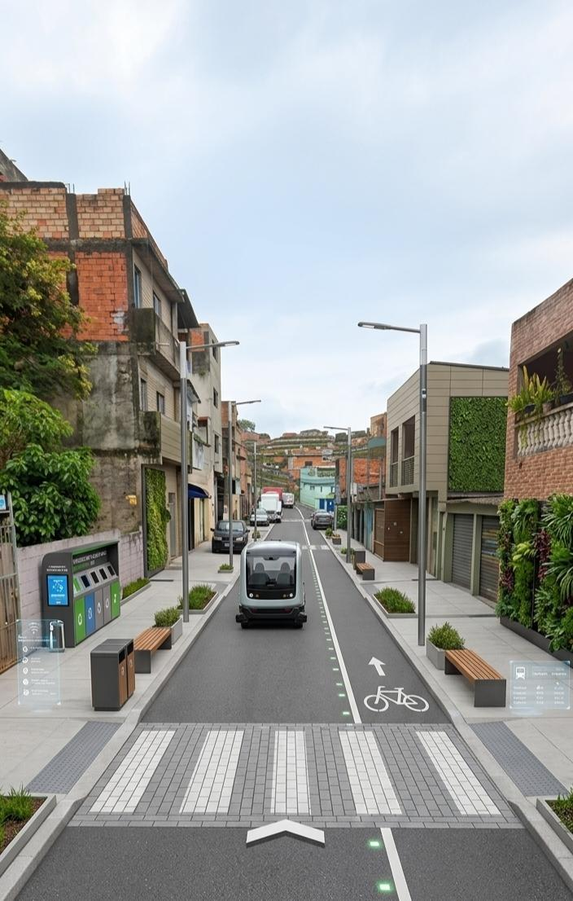
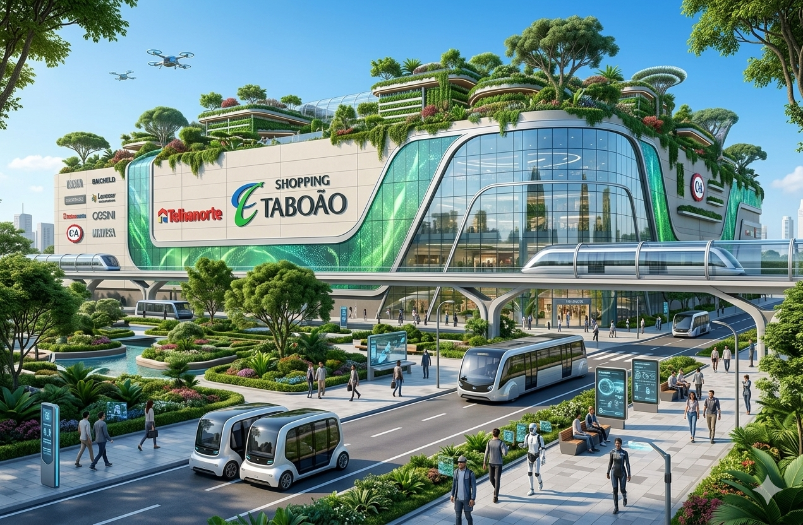

Minha Rua
Como é hoje: atualmente a rua se encontra bem temática com as pinturas da copa do mundo 2026
Como imagino em 2035: imagino as rua bem limpa, com bastante tecnoligia envolvida e arborização

Ver no Google Maps
Como é hoje: atualmente a rua se encontra bem temática com as pinturas da copa do mundo 2026
Como imagino em 2035: imagino as rua bem limpa, com bastante tecnoligia envolvida e arborização

Ver no Google MapsComo é hoje: está mal pintado e com baixa tecnologia
Como imagino em 2035: imagino a shopping com bastante tecnologia e com uma urbanização melhor

Ver no Google MapsCriaria um site para divulgar vagas de emprego na comunidade.
Criaria um sistema digital para apoiar a segurança e o bem-estar do bairro.
Criaria um sistema para facilitar doações a quem precisa.
Crie uma imagem futurista usando essa acima como base do arena multiuso de Taboãoda serra, Zona Sul de São Paulo, daqui a 10 anos, com tecnologia, árvores.
Gostaria de ver como o shopping da minha região ficaria melhor daqui uns 10 anos. Com bastante tecnologia e com uma urbanização melhor.
Essa é minha rua e gostaria que vc melhorasse ela, com tecnologia com ruas mais bonitas e com o aspecto melhor.